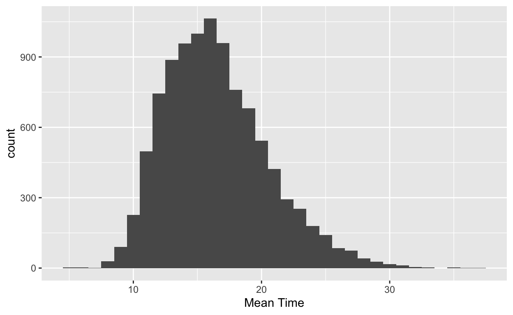
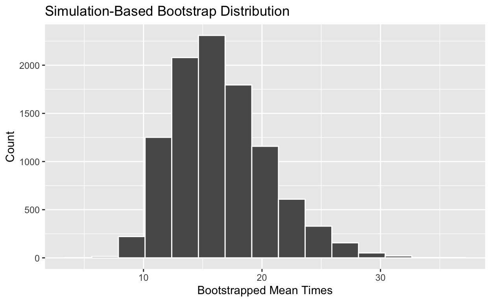
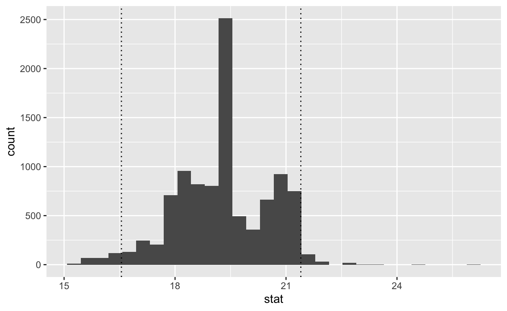
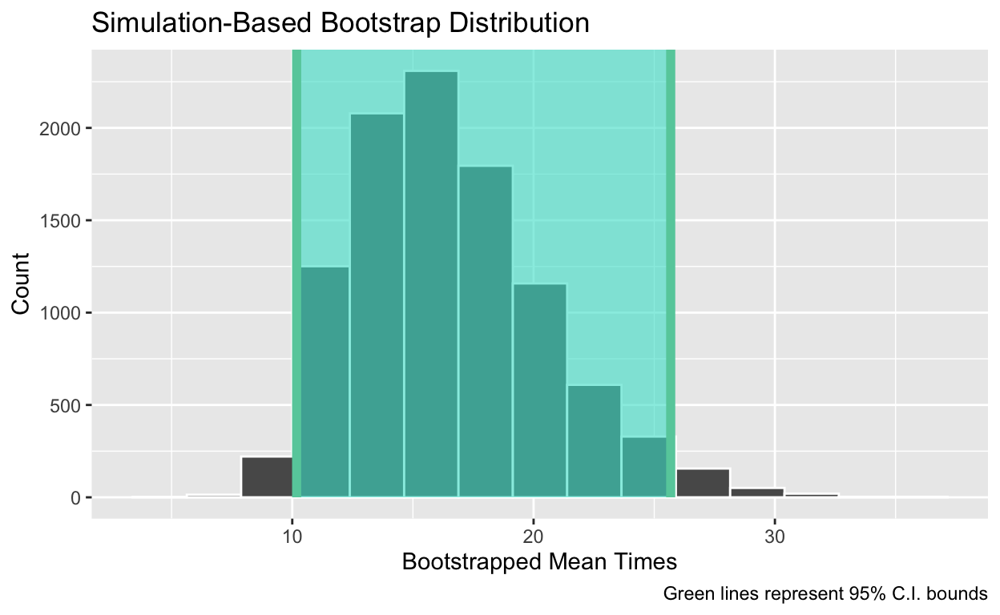

This brief tutorial will help you understand bootstrapping and learn how to construct bootstrap confidence intervals using the infer package. To start, load the tidyverse and infer packages. If you haven’t already installed infer, do that first by running the code below.
install.packages("infer")Remember, you only need to install packages once, but you need to load them at the start of every session.
library(tidyverse)
library(infer)Statistical inference refers to the process of generalizing from a sample to a population. We could use a single number (a point estimate) as our best guess of the population parameter but we often prefer a range of plausible values (an interval estimate or a confidence interval).
To construct a confidence interval we need to quantify the variability of our sample statistic. We can do this using the Central Limit Theorem but today we will focus on a simulation-based method called bootstrapping. Invented in 1979 by Brad Efron, bootstrapping allows us to construct confidence intervals based on our sample data using resampling.
In general, bootstrap methods
The basic idea is as follows: our sample is representative of the population, so if we resample from our original sample many times, this is representative of what we would obtain if we took many samples from the population.
To bootstrap we follow the steps outlined below:
That’s it!
To introduce the bootstrap idea, we will use data and material from Tim Hesterberg’s Bootstrap Methods and Permutation Tests. A link is provided in the Resources and References panel below.
The telecommunications conglomerate Verizon is both a local telephone company that maintains land-line phone services, called an Incumbent Local Exchange Carrier (ILEC), and a Competitive Local Exchange Carrier (CLEC), which means it sells long-distance services. If there is a service outage and a repair is needed, Verizon is obligated by law to make repairs as quickly for CLEC customers as their own. We will investigate the repair times (in hours) for the two types of customers.
The data is in the verizon.csv file. We read in the data and create subsets with the ILEC and CLEC repair times.
verizon <- read_csv("verizon.csv")
verizon_ilec <- verizon %>% filter(Group == "ILEC")
verizon_clec <- verizon %>% filter(Group == "CLEC")Create an appropriate plot of the repair times for ILEC and CLEC customers.
ggplot(verizon, aes(x = Group, y = Time)) +
geom_boxplot()Calculate summary statistics (including mean, median, sd, and sample size) for the repair times for ILEC and CLEC customers.
verizon %>%
group_by(Group) %>%
summarize(
mean_wait = mean(Time),
median_wait = median(Time),
sd_wait = sd(Time),
count = n()
)You should notice that the mean time is higher for CLEC customers than for ILEC customers and that the data are non-normal. In particular, the ILEC repair times are extremely right-skewed.
To generate the bootstrap distribution using the infer package we must:
specify() the variable of interestgenerate() the bootstrap samplescalculate() the bootstrap statisticsLet’s use the three functions above to construct a bootstrap confidence interval for the mean repair time for CLEC customers. We use the set.seed() function below to control the random number generator and make our simulation reproducible.
set.seed(42)
boot_dist <- verizon_clec %>%
specify(response = Time) %>%
generate(reps = 10000, type = "bootstrap") %>%
calculate(stat = "mean")We specify that the Time column in the verizon_clec data is our response of interest, generate 10000 resamples from our original sample of type bootstrap, and calculate the mean for each sample. These three functions generate the bootstrap distribution and store the results in boot_dist.
Let’s visualize the bootstrap distribution. We can do this using ggplot.
ggplot(data = boot_dist, aes(x = stat)) +
geom_histogram(binwidth = 1) +
labs(x = "Bootstrapped Mean Times", y = "Count")
Alternatively, the infer package has a built-in function called visualize that allows us to visualize the bootstrap distribution.
visualize(boot_dist) +
labs(x = "Bootstrapped Mean Times", y = "Count")
To construct a 95% bootstrap confidence interval, just find the middle 95% of the bootstrap distribution. The middle 95% corresponds to the lowest 2.5% of the data and the top 97.5% of the data, so we use the quantile function with values 0.025 and 0.975. We can use the same procedure for any desired level of confidence.
boot_dist %>%
summarize(
lower_bound = quantile(stat, 0.025),
upper_bound = quantile(stat, 0.975)
)The infer package also has a built-in function called get_ci which does the same thing.
percentile_ci <- get_ci(boot_dist, level = 0.95)
percentile_ciFinally, let’s visualize the confidence interval on the bootstrap distribution.
lower_bound <- boot_dist %>%
summarize(lower_bound = quantile(stat, 0.025)) %>%
pull()
upper_bound <- boot_dist %>%
summarize(upper_bound = quantile(stat, 0.975)) %>%
pull()
ggplot(data = boot_dist, aes(x = stat)) +
geom_histogram(binwidth = 1) +
geom_vline(xintercept = c(lower_bound, upper_bound), linetype = "dotted") +
labs(x = "Bootstrapped Mean Times", y = "Count")
We can accomplish the same thing using tools from the infer package. Remember, if you are ever confused about a function you can pull up the documentation by running (for example) ?visualize.
visualize(boot_dist) +
shade_confidence_interval(endpoints = percentile_ci) +
labs(
x = "Bootstrapped Mean Times", y = "Count",
caption = "Green lines represent 95% C.I. bounds"
)
Finally, we provide a brief one-sentence interpretation in the context of the problem. We are 95% confident that the true mean repair time for CLEC repairs is between 10.2 and 25.7 hours.
Use the code chunk below to generate the bootstrap distribution of the median repair time for ILEC customers.
Then, construct an 80% bootstrap confidence interval. Provide an interpretation of your interval in context.
set.seed(10)set.seed(10)
boot_dist <- verizon_ilec %>%
specify(response = Time) %>%
generate(reps = 1000, type = "bootstrap") %>%
calculate(stat = "median")
get_ci(boot_dist, level = 0.80)